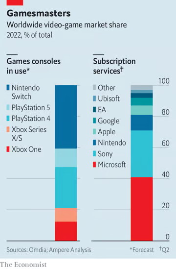

Mitchell Watt
Department of Economics
Monash University
Semester 2, 2026
A merger brings previously independent firms under common ownership.
An acquisition transfers control of a firm, business or collection of assets to a buyer.
The collective label mergers and acquisitions (M&A) covers both forms of transaction.
Horizontal mergers combine current or potential competitors.
Vertical mergers combine firms at different supply-chain stages. (Our focus next week.)
Conglomerate mergers combine firms whose products occupy distinct markets.
Internationally, around US$4.60 trillion in merger deals were announced in 2025, including 68 deals valued above $10 billion.
Coles–Myer created a large diversified retail group in 1985; its later unwinding illustrates the difficulty of sustaining conglomerate synergies.
Google–YouTube combined a fast-growing video network with Google's search, advertising and technical infrastructure.
Facebook–Instagram and Facebook–WhatsApp placed major emerging social and messaging platforms inside Facebook's ecosystem.
Disney–21st Century Fox expanded Disney's content portfolio and accelerated its streaming strategy.
Microsoft–Activision Blizzard - more on this later on.
The ACCC opposed Qantas–Alliance Airlines because Alliance was an important rival in charter air transport for resource-industry customers.
The ACCC opposed the proposed acquisition of Kmart and Officeworks by Woolworths; the principal concerns arose from the Kmart overlaps.
Nvidia–Arm was abandoned after competition authorities raised concerns about rivals' access to Arm technology, sensitive information and future innovation.
Let V_A and V_B be the values of firms A and B under continued independent ownership.
Let V_{A+B} be their value under common ownership after integration costs.
The private value gain from combining them is
If Firm A buys Firm B for V_B+\tau, its private benefit from the transaction is S-\tau.
S>0 means the merged business is worth more than the two stand-alone firms and there is an incentive for the firms to merge.
Cost synergies reduce fixed or marginal cost through economies of scale or scope, lower-cost plants, shared systems or removal of duplication.
Complementary assets become more productive together: technology and distribution, brands and geographic reach, or data combined with expertise or infrastructure.
Corporate control can replace bad management, redeploy underused assets or change investment discipline.
Market power can raise private profit by weakening a competitive constraint, increasing bargaining power or making coordination easier.
Managerial incentives can favour larger organisations through prestige, influence, compensation or job security.
Hubris can lead managers to overestimate synergies and underestimate integration costs.
Strategic and financial motives include:
different valuations of the target;
access to finance or highly valued shares;
defensive acquisition when rivals are consolidating;
an expectation that the buyer can manage the assets more effectively.
“Mergers are important for the efficient functioning of our open market economy. They allow businesses to achieve greater economies of scale, and to access new resources, technology and expertise. Most mergers pose little or no risk to competition and are unlikely to harm consumers. In fact, many mergers are pro-competitive and enhance consumer welfare. The merger control regime aims to focus on the small number of mergers that undermine the competitive process and risk significant consumer detriment.”
ACCC, Merger assessment guidelines (June 2025), p. 2.
The Australian Competition and Consumer Commission (ACCC) assesses acquisitions for their likely effect on competition.
Since 1 January 2026, Australia has a mandatory notification regime: acquisitions meeting the applicable requirements must be notified, subject to exemptions and notification waivers.
The main thresholds use Australian revenue and transaction value (approx. $200 million / $500 million); a sequence of smaller acquisitions can also trigger notification.
The regime is suspensory: parties must wait until approval takes effect before completing a notified acquisition.
Phase 1 is the initial review. Acquisitions requiring further investigation move to an in-depth Phase 2.
ACCC Decisions can be challenged in the Australian Competition Tribunal.
Would the merger substantially lessen competition? Even so, does it produce a net public benefit?
Authorities can clear a merger, require remedies that address competition concerns (such as selling an overlapping business), or challenge or prohibit it.
Internationally, OECD CompStats records about 91,000 merger decisions across 59 jurisdictions during 2015–2024:
Cleared unconditionally
Cleared with remedies
Challenged or prohibited
Sources: OECD, A Decade of OECD Competition Trends, Data and Insights (2025).
Market definition: Which products and geographic areas form the relevant market?
Concentration: How much would the merger change market shares and concentration?
Counterfactual: How would competition develop without the merger?
Competitive effects: Would losing an independent competitor increase prices, reduce quality or innovation, or make coordination easier?
Remaining competitive constraints: Could rivals expand, new firms enter, or powerful buyers constrain the merged firm?
Efficiencies: Could the merger lower costs or improve products, and would consumers benefit?
Market definition identifies the product group and geographic area within which the effects on competition are assessed.
In Australian law, a market includes goods or services that are “substitutable for, or otherwise competitive with” those under assessment (Competition and Consumer Act 2010 (Cth), s. 4E).
Market definition has a major effect on the estimation of market shares and concentration.
Two well-known disputes
Staples/Office Depot (US merger, 1997): Office supplies sold through specialist superstores, or all retailers selling the same pens and paper? How readily would customers switch between these stores?
Epic v Apple (US conduct case, 2021): Epic proposed an iPhone/iPad app-distribution market; Apple argued for all video-game transactions. Are Android devices, consoles and PCs close enough substitutes?
Begin with a narrow plausible candidate market.
Treat every product and location inside the candidate as controlled by one hypothetical monopolist.
Apply a small but significant and non-transitory increase in price (SSNIP), commonly 5 per cent.
Under the HMT, the market is the smallest set of products for which a hypothetical monopolist could profitably impose a SSNIP.
Compare:
the higher margin on retained sales;
the lost margin when customers switch outside the candidate.
A profitable SSNIP means the candidate passes the test.
Otherwise, add the closest outside substitute and repeat the analysis.
Demand for products A and B is
Initially, p_A=p_B=\$20. Both products have constant marginal cost $10. Ignore fixed costs.
A hypothetical monopolist controlling A raises its price by 5%, while B’s price stays at $20. How does A’s profit change?
First calculate the initial quantity at p_A=p_B=\$20: each product sells 1700-70(20)+20(20)=700 units.
Multiply the margin by quantity: A earns \pi_A^0=(20-10)(700)=\$7{,}000. B earns the same.
A 5 per cent SSNIP raises A's price from $20 to $21 while B remains at $20.
New quantity: q_A(21,20)=1700-70(21)+20(20)=630.
Use the new margin and quantity to calculate profit:
\pi_A^1=(21-10)(630)=\$6{,}930.
Answer D. The SSNIP reduces profit by $70. A alone fails as a candidate market, so we add B, its closest substitute.
Demand for products A and B is
Initially, p_A=p_B=\$20. Both products have constant marginal cost $10. Ignore fixed costs.
A hypothetical monopolist controlling both products raises both prices by 5%. What is the new combined profit?
A alone fails, so expand the candidate market to A and B. Raise both prices from $20 to $21 and compare joint profit.
Substitute both new prices into demand:
q_A=q_B=1700-70(21)+20(21)=650.
Initial joint profit: \Pi^0=2(20-10)(700)=\$14{,}000.
New joint profit: \Pi^1=2(21-10)(650)=\$14{,}300.
Answer A. The common price increase raises joint profit by $300, so the candidate market containing A and B passes the HMT.
Microsoft
Activision
Which markets would you examine in this merger,
and who are the main competitors in each?
Mobile vs PC vs console games? How readily would players switch between them?
Cloud gaming vs downloaded games? What about subscription services offering libraries of games?
All games, high-budget (AAA) games, or particular genres?
Substitution: which products would consumers switch between? What evidence would help us decide?
Potential competitors, depending on the market:
Game publishing: EA, Sony, Nintendo, Take-Two, Ubisoft, Epic Games.
Consoles: Sony, Nintendo.
Cloud gaming: Nvidia, Amazon, Sony.

A firm's market share is its sales as a percentage of total sales in the relevant market.
We can calculate shares using sales revenue or units sold, using the same measure for all firms.
Looking at the shares of all firms is a common way to assess market concentration: the extent to which sales are accounted for by a small number of firms.
A market where a few firms account for most sales is more concentrated than one where sales are spread across many similarly sized firms.
Market definition is vital: the products and geographic areas included determine which sales and firms we count, and hence the shares and concentration we measure.
With percentage market shares s_i, the Herfindahl–Hirschman Index is
Squaring makes the index sensitive to both the number of firms and inequality in their sizes. The HHI gives greater weight to larger firms.
With percentage shares, the HHI ranges from close to zero to 10,000.
Five equal firms each with 20 per cent have HHI=5(20^2)=2000.
The ACCC treats an HHI above 2,000 as highly concentrated and an increase above 100 points as significant for screening purposes.
In the Cournot model, concentration is linked to firms' markups.
Firm i's Lerner index is L_i=(P-c_i)/P, and its output share is s_i=q_i/Q.
Absolute market-demand elasticity is \varepsilon=-\dfrac{dQ}{dP}\dfrac{P}{Q}>0.
With HHI on the 0–10,000 scale:
Holding demand elasticity fixed, a higher HHI is associated with higher markups.
Caution: a cost reduction at one firm can let it gain market share, raising HHI even while prices fall and welfare improves.
Suppose firms A and B have shares s_A and s_B and all other shares remain unchanged.
Replace their separate contributions with the square of their combined share:
Expand the square:
Cancel the two original squared shares: \Delta HHI=2s_As_B.
The increment is larger when either merging firm is larger.
The formula measures the structural change created by placing the two shares under common ownership.
Square each publisher's market share and add the results:
The pre-merger HHI is 1200.
The merger replaces the separate 5% and 10% shares with one 15% share:
The merger raises HHI by 1300-1200=100.
Check: \Delta HHI=2s_As_B=2(5)(10)=100.
What does this calculation tell us about the horizontal effects, and what does it miss?
How much weight would you put on the change in HHI?
What else would you want to know about rivalry between Microsoft and Activision's games?
Could your conclusion change under a different market definition?
The increase is modest in this candidate market. HHI rises from 1,200 to 1,300, with several substantial publishers remaining. I would give this some weight against a broad horizontal concern.
Closeness of competition still matters. If Call of Duty became more expensive, would customers switch to Microsoft's games, or mainly to other publishers?
The calculation is a snapshot. It uses illustrative shares and holds other firms' shares fixed. It leaves out changes in prices, costs, quality, innovation and future rivalry.
Market boundaries and vertical links need separate attention. A narrower genre may look different; access to games on rival platforms raises a different mechanism.
HHI identifies transactions that warrant closer analysis.
Two markets with the same HHI can behave differently because of:
product differentiation and diversion;
capacity constraints and cost asymmetries;
entry conditions and buyer responses;
innovation and future products;
the competitive role of a small maverick.
A high share can coexist with weak market power when substitution and entry are strong.
A small-share firm can still be important when it is a close competitor, a maverick or a likely future entrant.
Before a horizontal merger, each party constrains the other:
a price increase can divert customers to the other party;
an output reduction can be offset by the other party's expansion;
weaker quality or service can cause switching.
After the merger, the common owner internalises the effect of each firm's decisions on the other firm's profit.
A unilateral effect is a change in conduct that the merged firm finds profitable through its own changed incentives.
Before the merger, firm A chooses action a_A to maximise \pi_A, while firm B chooses a_B to maximise \pi_B.
At the pre-merger equilibrium (a_A^0,a_B^0),
After the merger, the common owner maximises \Pi=\pi_A+\pi_B.
We ask whether the old action a_A^0 still maximises joint profit.
Evaluate the derivative of joint profit at the pre-merger actions (a_A^0,a_B^0):
A's own-profit derivative is zero at its old optimum, so
The cross-effect is the effect of A's action on B's profit. The merger changes A's incentive because the common owner now internalises this effect.
General rule: the sign of \partial\pi_B/\partial a_A gives the local direction of the incentive. Its magnitude measures the local marginal effect on joint profit.
Products A and B are substitutes and are initially owned by separate firms. They now merge. Starting from the pre-merger prices, an increase in A's price would cause some customers to switch to B. Both products have positive price–cost margins. Assume demand and costs do not change.
What happens to the incentive to set A's price, holding the price of B fixed?
The merged firm has a stronger incentive to raise A's price.
The merged firm has a stronger incentive to reduce A's price.
The merged firm does not want to change price.
We cannot tell without knowing market shares.
Answer: 1.
Before the merger, customers who leave A for B generate profit for a rival.
After the merger, some lost A sales become profitable B sales for the same owner.
The common owner internalises this gain in B's profit when setting A's price.
Greater diversion from A to B and a larger margin on B make the incentive stronger. Market shares answer different questions about market structure.
B's profit is \pi_B=(p_B-c_B)q_B(p_A,p_B).
Holding B's price fixed, differentiate B's profit with respect to A's price:
For substitutes, \partial q_B/\partial p_A>0. With a positive margin on B, \partial\pi_B/\partial p_A>0.
At A's pre-merger optimum, \partial\pi_A/\partial p_A=0. Therefore, at the old prices,
Extra output by one merging firm lowers the price received on the other firm's sales. Common ownership therefore encourages the merging firms to reduce their combined output. The final effect on price also depends on how their rivals respond.
We will derive equilibrium output and price in the Cournot model, then compare the outcomes before and after a merger.
There are N\geq 2 independent firms selling an identical product.
Firms choose quantities simultaneously; demand is P=A-BQ, with B>0.
Each firm has constant marginal cost c<A.
Costs stay unchanged after the merger, with no entry or capacity constraints.
Firm i's best response maximises its profit given rivals' total output Q_{-i}, where Q=q_i+Q_{-i}.
| Profit | \pi_i(q_i,Q_{-i})=\big[A-B(q_i+Q_{-i})-c\big]q_i.\displaystyle \pi_i(q_i,Q_{-i}) | \displaystyle {}=\big[A-B(q_i+Q_{-i})-c\big]q_i. |
|---|---|---|
| Expand | \pi_i=(A-c-BQ_{-i})q_i-Bq_i^2.\displaystyle \pi_i | \displaystyle {}=(A-c-BQ_{-i})q_i-Bq_i^2. |
| Differentiate in q_i, holding Q_{-i} fixed |
\frac{\partial\pi_i}{\partial q_i}=A-c-BQ_{-i}-2Bq_i=0.\displaystyle \frac{\partial\pi_i}{\partial q_i} | \displaystyle {}=A-c-BQ_{-i}-2Bq_i=0. |
| Rearrange | 2Bq_i=A-c-BQ_{-i}.\displaystyle 2Bq_i | \displaystyle {}=A-c-BQ_{-i}. |
| Divide by 2B, allowing zero output |
q_i=\max\!\left\{0,\frac{A-c-BQ_{-i}}{2B}\right\}.\displaystyle q_i | \displaystyle {}=\max\!\left\{0,\frac{A-c-BQ_{-i}}{2B}\right\}. |
At a Cournot equilibrium, each firm best responds to rivals' outputs. With identical costs, we seek a symmetric equilibrium: all N independent firms produce the same output q_N.
Each firm's rivals therefore produce Q_{-i}=(N-1)q_N.
| Substitute into the best response |
2Bq_N=A-c-B(N-1)q_N.\displaystyle 2Bq_N | \displaystyle {}=A-c-B(N-1)q_N. |
|---|---|---|
| Collect output terms | 2Bq_N+B(N-1)q_N=A-c.\displaystyle 2Bq_N+B(N-1)q_N | \displaystyle {}=A-c. |
| Factor out Bq_N, using 2+(N-1)=N+1 |
B(N+1)q_N=A-c.\displaystyle B(N+1)q_N | \displaystyle {}=A-c. |
| Divide by B(N+1) | q_N=\frac{A-c}{B(N+1)}>0.\displaystyle q_N | \displaystyle {}=\frac{A-c}{B(N+1)}>0. |
Given each firm's output q_N=\dfrac{A-c}{B(N+1)}, calculate the market price.
| Total output | Q_N=Nq_N=\frac{N(A-c)}{B(N+1)}.\displaystyle Q_N | \displaystyle {}=Nq_N=\frac{N(A-c)}{B(N+1)}. |
|---|---|---|
| Substitute into demand and cancel B |
P_N=A-B\frac{N(A-c)}{B(N+1)}=A-\frac{N(A-c)}{N+1}.\displaystyle P_N | \displaystyle {}=A-B\frac{N(A-c)}{B(N+1)}=A-\frac{N(A-c)}{N+1}. |
| Common denominator | P_N=\frac{A(N+1)-N(A-c)}{N+1}=\frac{A+Nc}{N+1}.\displaystyle P_N | \displaystyle {}=\frac{A(N+1)-N(A-c)}{N+1}=\frac{A+Nc}{N+1}. |
| Cost plus the margin | P_N=c+\frac{A-c}{N+1}.\displaystyle P_N | \displaystyle {}=c+\frac{A-c}{N+1}. |
Price exceeds marginal cost by \dfrac{A-c}{N+1}, so more independent firms mean a smaller margin.
Two of the N firms merge. With constant marginal cost c and unrestricted capacity, their owner chooses their combined output as one Cournot firm. Use N-1 in the equilibrium formulas.
Each firm's output:
q^{\mathrm{pre}}=\dfrac{A-c}{B(N+1)}.
Total output:
Q^{\mathrm{pre}}=\dfrac{N(A-c)}{B(N+1)}.
Each firm's output:
q^{\mathrm{post}}=\dfrac{A-c}{BN}.
Total output:
Q^{\mathrm{post}}=\dfrac{(N-1)(A-c)}{BN}.
Total market output falls.
The merged owner acts as one Cournot firm, reducing the number of independent firms from N to N-1.
| Before the merger | P^{\mathrm{pre}}=c+\frac{A-c}{N+1}.\displaystyle P^{\mathrm{pre}} | \displaystyle {}=c+\frac{A-c}{N+1}. |
|---|---|---|
| After the merger | P^{\mathrm{post}}=c+\frac{A-c}{N}.\displaystyle P^{\mathrm{post}} | \displaystyle {}=c+\frac{A-c}{N}. |
| Subtract the pre-merger price |
P^{\mathrm{post}}-P^{\mathrm{pre}}=(A-c)\left(\frac1N-\frac1{N+1}\right).\displaystyle P^{\mathrm{post}}-P^{\mathrm{pre}} | \displaystyle {}=(A-c)\left(\frac1N-\frac1{N+1}\right). |
| Common denominator | P^{\mathrm{post}}-P^{\mathrm{pre}}=\frac{A-c}{N(N+1)}>0.\displaystyle P^{\mathrm{post}}-P^{\mathrm{pre}} | \displaystyle {}=\frac{A-c}{N(N+1)}>0. |
The merger raises price and reduces total output.
The merged firm reduces its combined output: q^{\mathrm{post}}<2q^{\mathrm{pre}}.
If outsiders remain, each expands: q^{\mathrm{post}}>q^{\mathrm{pre}}.
This expansion replaces part of the merging firms' output reduction. Total output still falls, so the market price rises.
Consumers face a higher price and buy less, reducing consumer surplus.
In the applied session, we will calculate these changes for a merger between two of three firms.
The Cournot merger paradox is that a merger can reduce the merging parties' combined profit, even as the market price rises.
The relevant comparison is the merged firm's profit against the combined pre-merger profit of both parties.
Any remaining outsiders benefit from the output contraction, expanding and earning more.
In the applied session, we will derive the merger paradox in the three-to-two firm merger.
A merger needs a private rationale. Cost savings, capacity advantages, product differentiation or a larger coalition can change the result.
A marginal-cost saving lowers the cost of an additional unit and directly affects price or output incentives. Pass-through determines how much reaches customers.
A fixed-cost saving raises profit while leaving marginal cost unchanged. Price effects arise through entry, exit, investment or innovation over time.
Quality and innovation efficiencies can increase willingness to pay, reduce effective price or accelerate new products.
ACCC gives greatest weight to likely, verifiable, timely efficiencies that require the merger and benefit customers in the affected market.
MillerCoors (2008 US joint venture): evidence of realised efficiencies
Combining brewery networks allowed Coors beer to be made at Miller plants closer to customers, reducing shipping costs. The DOJ accepted credible forecasts of merger-specific production and distribution savings.
A later study estimated that shipping efficiencies lowered average lager prices by about 1.8%, holding other effects fixed (Ashenfelter, Hosken and Weinberg, 2015).
In the applied session, we will return to the three-firm example and allow the merger to lower the merged firm's marginal cost.
We will see that:
lower marginal cost encourages the merged firm to expand output, counteracting its incentive to restrict supply;
a sufficiently large saving can restore the original three-firm price and total output;
at that point, consumers are as well off as before, while producing the same output with fewer resources raises total surplus;
a smaller saving offsets only part of the price increase in this example, a larger cost saving leads to welfare benefits from merger.
Product characteristics, quality, location, brand and customer group shape substitution.
A price increase for one product can send different proportions of lost sales to different alternatives (diversion).
Products with similar attributes generally have higher diversion between them.
A merger between close substitutes removes a stronger constraint than a merger between distant substitutes.
Looking at current market shares alone can miss this product-level closeness.
A diversion ratio is the proportion of one product's lost sales that switch to another product following a small worsening in price or another competitive term.
Source: ACCC, Merger Assessment Guidelines, June 2025, para. 2.5.
The diversion ratio from product i to product j is
The denominator is the number of sales product i loses after a small price increase.
The numerator is the number of those sales product j gains.
Diversion is directional: D_{ij} can differ from D_{ji}.
A high D_{ij} means product j is a common next choice for customers leaving product i.
A ratio close to one indicates very close substitution; a ratio close to zero indicates little direct substitution.
Before the merger, the risk of switching to j constrains product i's price, quality and service.
After an i–j merger, the common owner recaptures the sales that move from i to j.
A small-share product can therefore impose a strong constraint when it receives a large share of another product's lost sales.
Diversion can be estimated from switching data, bidding or win–loss records, surveys, availability changes and demand responses. It should be measured in both directions.
Gross upward pricing pressure (UPP) measures profit recaptured on the partner product per sale lost by the product raising its price, before allowing for merger-related cost efficiencies.
At pre-merger prices and unchanged costs, divide the pricing cross-effect by product i's lost sales:
The ratio of sales gained to sales lost is the diversion ratio D_{ij}:
Gross UPP is diversion multiplied by the partner product's margin:
All else equal, a larger UPP suggests a stronger incentive for the merged firm to raise A's price.
Higher diversion from A to B, or a larger margin on B, means more profit is recaptured. Lost sales become less costly to the combined firm.
Marginal-cost efficiencies can offset this pressure. The actual price change also depends on demand and other firms' responses.
The denominator is the 100 sales lost by A. The numerator is the 40 sales gained by B.
D_{AB}=\dfrac{40}{100}=0.40=40\%.
For every 100 sales A loses, 40 switch to B.
This indicates substantial substitution from A to B. Its significance depends on the other alternatives available to consumers.
Diversion is directional. This calculation does not tell us the diversion ratio from B to A.
Product A has price $10 and marginal cost $6. Product B has price $12 and marginal cost $7.
A small increase in A's price causes A to lose 100 unit sales and B to gain 40 unit sales. B's price stays unchanged. Suppose A and B merge, with marginal costs unchanged.
What is gross upward pricing pressure for A, measured in dollars per sale lost by A?
$1.60
$4.80
$200
$2.00
Diversion from A to B is D_{AB}=40/100=0.40.
B's price–cost margin is p_B-c_B=12-7=\$5 per sale.
\mathrm{UPP}^{\mathrm{gross}}_A=D_{AB}(p_B-c_B)=0.40(5)=\$2.
Equivalently, the 40 diverted sales generate $200 of profit on B. Dividing by A's 100 lost sales gives $2 per lost sale.
Answer D. Common ownership recaptures $2 through B for each sale lost by A, strengthening the local incentive to raise A's price, all else equal.
Gross UPP does not predict a $2 price increase. The eventual price change also depends on demand, merger efficiencies and rival responses.
Mergers can change product variety in two ways.
First, a merged firm may choose to retire a product (e.g., when its incremental profit does not justify its fixed cost). This can leave some consumers with a poorer match.
Second, a merged firm may change the types of products offered.
Before the merger, A may become more like B to attract B's customers.
After the merger, the common owner internalises cannibalisation: the loss of B's sales or profit when A attracts its customers.
This can encourage the firm to give retained products less similar characteristics and appeal to different consumer groups.
In the Microsoft/Activision example, how might a merger affect the offering of Halo and Call of Duty?
Unilateral effects ask how the merged firm's own optimal conduct changes.
Coordinated effects ask whether the merger makes coordination among firms more likely, complete or sustainable.
Coordination can concern price, customers, territories, service, investment, capacity or innovation.
A merger can affect:
the payoff from adhering to a common understanding;
the short-run gain from deviation;
the severity of punishment;
the ability to detect deviations.
Suppose a firm earns:
\pi^{\mathrm{Coll}} in each coordinated period;
\pi^{\mathrm{Dev}} in the period when it deviates;
\pi^{\mathrm{Pun}} in every later punishment period.
Assume \pi^{\mathrm{Dev}}>\pi^{\mathrm{Coll}}>\pi^{\mathrm{Pun}}.
From Week 4, coordination is sustainable when
The critical discount factor \bar\delta is the minimum weight on future profit needed to sustain coordination.
Does common ownership raise or lower this threshold?
Suppose n\geq 3 firms share joint monopoly profit \Pi^M equally under coordination. A deviator captures \Pi^M for one period. Punishment profit is zero.
Write the three profit terms:
Substitute into the Week 4 threshold:
Cancel \Pi^M:
With equal sharing and zero punishment profit, the threshold is \bar\delta(n)=1-1/n.
A merger reduces the number of independent firms from n to n-1.
Before the merger: \bar\delta_{\mathrm{pre}}=1-\dfrac1n.
After the merger: \bar\delta_{\mathrm{post}}=1-\dfrac1{n-1}.
Since 1/(n-1)>1/n, the threshold falls. Coordination is sustainable for a wider range of \delta.
A maverick firm is an aggressive competitor whose pricing, expansion or innovation disrupts coordination.
It may refuse to follow rivals' price increases, forcing them to compete harder. Its influence can exceed what its market share suggests.
A merger that weakens this behaviour can make coordination easier to sustain.
Examples from practice
BP/Woolworths petrol (2017): The ACCC found Woolworths generally raised prices later and discounted sooner than BP. It opposed the takeover, warning of larger, more coordinated petrol-price increases.
AT&T/T-Mobile (2011): US authorities argued that T-Mobile's aggressive pricing and innovation disrupted rivals, and its acquisition would increase coordination risk. The deal was abandoned after their legal challenge.
Higher prices after a merger can make entry by new firms, or expansion by existing rivals, more profitable.
Competition authorities need credible evidence that entry will be:
Likely: commercially viable and feasible, allowing for costs and risk;
Timely: fast enough to prevent or counteract the merger's competitive harm;
Sufficient: able to compete on the scale and in the products needed to replace the lost constraint.
Assess practical evidence: entry costs, access to finance and key inputs, approvals, capacity, customer switching and past entry experience.
Forecast profits after entry, allowing for how incumbents adjust prices and output. A temporarily high post-merger price may fall once entry occurs.
Often, claims of future entry are looked on critically: if the merging firms expect entry to restore competition, where do they expect the gains from merging to come from?
Why do mergers cluster within industries and periods? (Merger waves)
How do the effects of repeated acquisitions by one buyer accumulate? (Serial acquisitions)
How can an acquisition change the development of products that do not yet exist? (Killer acquisitions)
A merger wave is a period in which merger activity rises and transactions cluster across industries or within a particular industry.
Some examples include:
horizontal industrial consolidation around the turn of the twentieth century;
conglomerate expansion during the 1960s;
debt-financed takeovers during the 1980s;
globalisation- and technology-related megadeals around 2000;
recent acquisition activity involving technology, data and investment funds.
Industry shocks: Changes in technology, regulation, trade, demand or input costs can alter efficient scale and the value of combining assets. Many firms face these changes at the same time.
Financing and valuation: Available credit makes more acquisitions feasible, and highly valued shares can be used to pay for them. Different beliefs about future asset values can also create opportunities for trade.
Strategic responses: An initial merger can change the profitability of later deals. Rivals may seek matching scale or complementary assets, or acquire another firm to avoid becoming a takeover target.
Serial acquisitions are a sequence of acquisitions made by the same buyer.
Cumulative effects are the combined competitive effects of that sequence relative to the likely path without it.
Examples studied or challenged in practice
PETstock (Australia): Acquired Best Friends Pets, Pet City and Animal Tuckerbox. ACCC concerns led to a 2023 undertaking to divest 41 retail stores.
US Anesthesia Partners (Texas): The FTC alleged that a decade of buying anaesthesia practices built market power and enabled higher prices.
Luxottica (eyewear): Acquired Ray-Ban, Oakley, Sunglass Hut and OPSM. The OECD uses it to illustrate consolidation of brands and retail chains.
Each individual acquisition may look modest even when the sequence materially changes rivalry.
An acquirer starts with share s_0 and buys targets with shares t_1,t_2,\ldots,t_k. All shares use percentage points in one unchanged relevant market.
Immediately before acquisition j, the acquirer's share is
Acquisition j increases the HHI by 2S_{j-1}t_j. The same-sized target therefore creates a larger HHI increment after the acquirer has grown.
A firm begins with a 20 per cent share and sequentially acquires four firms, each with a 5 per cent share. Assume all firms operate in the same market and all other shares remain fixed.
Calculate:
the acquirer's share before and after each transaction;
the HHI increment from each acquisition;
the cumulative HHI increase, checking it directly using the initial and final ownership shares;
whether successive acquisitions create equal HHI increments, and why.
| Acquisition | Share before | Share after | HHI increment 2S_{j-1}t_j |
|---|---|---|---|
| 1 | 20 | 25 | 2(20)(5)=200 |
| 2 | 25 | 30 | 2(25)(5)=250 |
| 3 | 30 | 35 | 2(30)(5)=300 |
| 4 | 35 | 40 | 2(35)(5)=350 |
Add the increments: \sum_{j=1}^{4}\Delta HHI_j=200+250+300+350=1100.
Check directly: 40^2-20^2-4(5^2)=1100. The acquirer grows, so each 5% target produces a larger increment.
Current shares may understate targets with valuable capacity, sites, technology, licences or expansion plans.
Earlier acquisitions can alter the market total, future entry and the counterfactual shares used for later transactions.
In Australia, qualifying target revenue from acquisitions during the preceding three years can be aggregated for the notification thresholds.
A sequence of individually modest transactions can therefore create a compulsory notification obligation.
The relevant counterfactual is the likely market path without the sequence, rather than the market immediately before the final acquisition.
Potential competition is the constraint exerted by a firm that may enter or expand.
An actual potential competitor is likely to enter or expand in the counterfactual.
A perceived potential competitor constrains current conduct because incumbents anticipate possible entry.
A killer acquisition occurs when an incumbent acquires a rival firm or project and discontinues, delays or scales back development to avoid competition with existing products.
Examples raising this concern
Questcor/Synacthen (2013): Acquired US rights to a potential rival to its Acthar drug. The FTC alleged that this prevented rival development; the case settled in 2017.
Facebook/Giphy (2020): Giphy's advertising service was closed after acquisition. The CMA found a loss of potential advertising competition and ordered divestment in 2022.
A target with zero current share can still be a significant future constraint. HHI may record no merger increment.
Sources: FTC (2017); CMA (2022).
Let:
V_E be the present value of profit generated by the entrant's project;
F be the development cost;
\Delta V_I be the change in the incumbent's existing-product profit after launch.
An independent owner launches when
A common owner launches when
Cannibalisation implies \Delta V_I<0, which can reverse the launch decision.
Suppose successful launch occurs with probability \rho, and entrant profit and cannibalisation occur only after success.
The independent owner launches when
The common owner launches when
A modest probability can still represent an important expected constraint when success would have a large competitive effect.
Evidence should address investment stages, technical risk, rival projects and how acquisition changes the probability or timing of success.
Specify the likely future without the merger.
Identify the current or future competitive constraint placed under common control.
Choose a model that matches the market's competitive process.
Derive how common ownership changes incentives.
Predict the merged firm's conduct and rivals' equilibrium responses.
Incorporate merger-specific efficiencies and product changes.
Assess entry, expansion, repositioning and coordination.
Compare price, output, quality, innovation, consumer surplus and total surplus across the two futures.
What might consumers lose? How much rivalry disappears between the firms' games? Could common ownership weaken incentives to compete on price, quality, variety or new titles?
What might consumers gain? Could shared technology, development resources or lower costs improve games or reduce prices? Which gains require the merger, and would they reach consumers?
Which arguments are stronger? On the horizontal effects alone, how concerned are you? What evidence would change your view?
Next week: vertical mergers. We have focused on rivalry between publishers today. We will examine how control of games could affect competing consoles, subscription services and cloud-gaming providers.
“The Commission considers that the Transaction does not raise competition concerns as regards horizontally affected markets…”
European Commission, Summary of Commission Decision, 15 May 2023, para. 12, OJ p. C 285/9.
The EC pointed to generally limited combined shares and small increments, including in its assessment of narrower game segments.
The US appeals court described the FTC's case as:
“viewing the merger as a vertical integration between a content-platform operator and a content producer”
US Ninth Circuit, FTC v. Microsoft, 7 May 2025, p. 6.
The FTC's challenge focused on competing consoles, subscription services and cloud streaming. This appeal concerned the denial of a preliminary injunction.
Common ownership makes firms internalise how their prices, quantities and product choices affect one another's profits.
Removing a close competitor strengthens the incentive to raise prices or reduce output, all else equal.
Marginal-cost savings make extra output more profitable and can offset the loss of rivalry.
Rivals' expansion or entry can limit price increases. Their responses can also make a merger unprofitable for the merging firms.
A merger can make coordination easier by changing the payoffs from cooperation, deviation and punishment, especially when it removes a maverick.
Common ownership changes product and innovation incentives: it can support better products, while protecting existing profits can encourage product withdrawal or cancellation of competing projects.
A profitable merger can harm consumers. Total welfare also depends on resource savings, product variety, quality and future innovation.
For inverse demand P(Q), firm i's first-order condition is
Rearrange and divide by price:
Use these definitions:
Output share: s_i=q_i/Q.
Lerner index: L_i=(P-c_i)/P.
Absolute market-demand elasticity: \varepsilon>0.
Use dQ/dP=1/P'(Q):
Taking the reciprocal gives
Larger \varepsilon means a stronger demand response to price.
Recall the Lerner index L_i=(P-c_i)/P. The first-order condition gives
Multiply and divide by total output Q:
With a common price and demand elasticity, a larger output share implies a larger price–cost margin.
Start from L_i=s_i/\varepsilon, with shares measured as fractions. Weight each firm's margin by its share:
Here HHI=\sum_i s_i^2 uses shares between 0 and 1.
With fractional shares, we found \sum_i s_iL_i=HHI/\varepsilon.
Now use percentage shares \widetilde{s}_i=100s_i. On the 0–10,000 scale,
The share-weighted margin is therefore
Holding demand elasticity fixed, greater Cournot concentration implies a larger share-weighted markup.
The result uses several assumptions:
firms choose quantities;
products are homogeneous and sell at one market price;
each firm treats rivals' quantities as fixed;
the relevant demand elasticity is well defined at the equilibrium;
market shares reflect firms' output choices.
Product differentiation, capacity constraints, asymmetric costs, entry and innovation can make markets with the same HHI behave differently.
HHI has a precise interpretation inside this benchmark. Outside it, concentration remains evidence that must be connected to an appropriate competitive mechanism.
The acquirer has share S_{j-1} and the target has share t_j. Compare their combined HHI contribution with their separate contributions:
Expand the square:
We found \Delta HHI_j=2S_{j-1}t_j.
Before acquisition j, the acquirer already owns the earlier targets:
Substituting gives
The same-sized target adds more to HHI after the acquirer has grown.
Across k acquisitions,
The squared total share is the final owner's HHI contribution.
Subtract the acquirer and targets' separate initial contributions.
All shares must refer to the same relevant market and consistent market totals.